Passamos cerca de 30 dias nas DOLOMITAS, entre o fim de abril e o fim de maio, rodando de motorhome. Pegamos sol, chuva, frio e até neve no fim de maio, que chegou até a congelar a água do nosso motorhome.
Aqui vai o que a gente gostaria de ter sabido antes. Não somos agência: o que está marcado como vivido é a nossa experiência, e o que está como oficial foi checado nos sites oficiais.
O QUE SÃO AS DOLOMITAS
As DOLOMITAS são uma cadeia de montanhas no nordeste da Itália, espalhada pelo Alto Ádige, pelo Trentino e pelo Vêneto. Os picos de rocha clara, que ficam rosados no pôr do sol, os lagos cor de esmeralda e os vales verdes fazem delas um dos cenários de montanha mais famosos do mundo e patrimônio da UNESCO desde 2009.
OS LUGARES
Por onde passamos
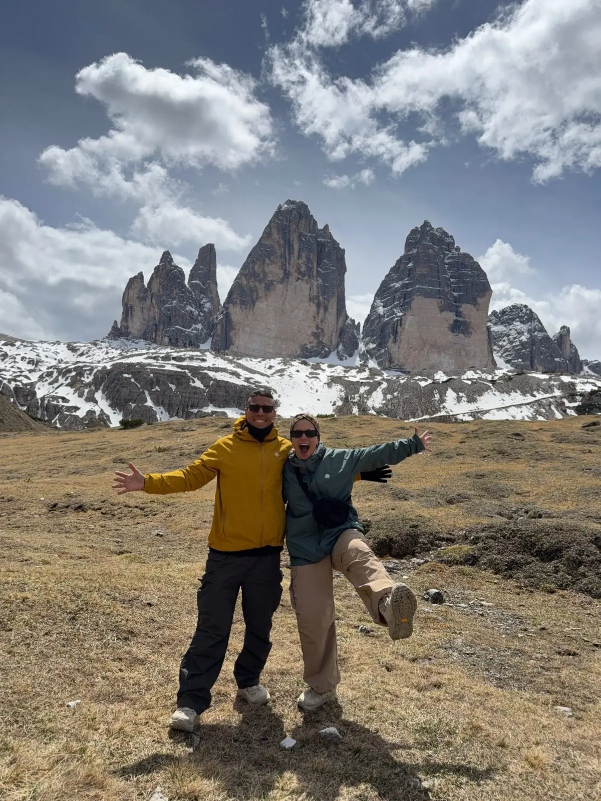
LADO LESTE
TRE CIME DI LAVAREDO
A trilha que mais amamos. Dá para subir a pé por Val di Landro.
Dois lagos a cerca de 1.400 m de altitude, no vale entre Dobbiaco e Cortina, bem menos turísticos que os mais famosos. Em alemão: Dürrensee e Toblacher See.
Reservar: 30 min a 1 h Melhor horário: fim de tarde
O Lago di Landro e o de Dobbiaco foram a nossa maior surpresa da região: lindos, com um reflexo incrível das montanhas e bem menos turísticos que os mais famosos. Eles ficam relativamente perto um do outro e combinam no mesmo passeio.
ESTACIONAMENTO
VIVIDO
O estacionamento em frente ao Lago di Landro custava €3 por hora (primavera de 2026).
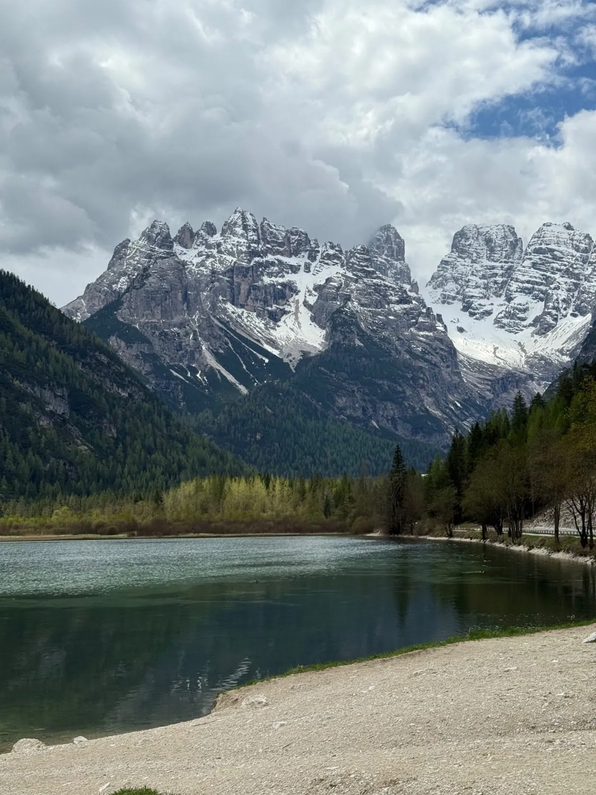
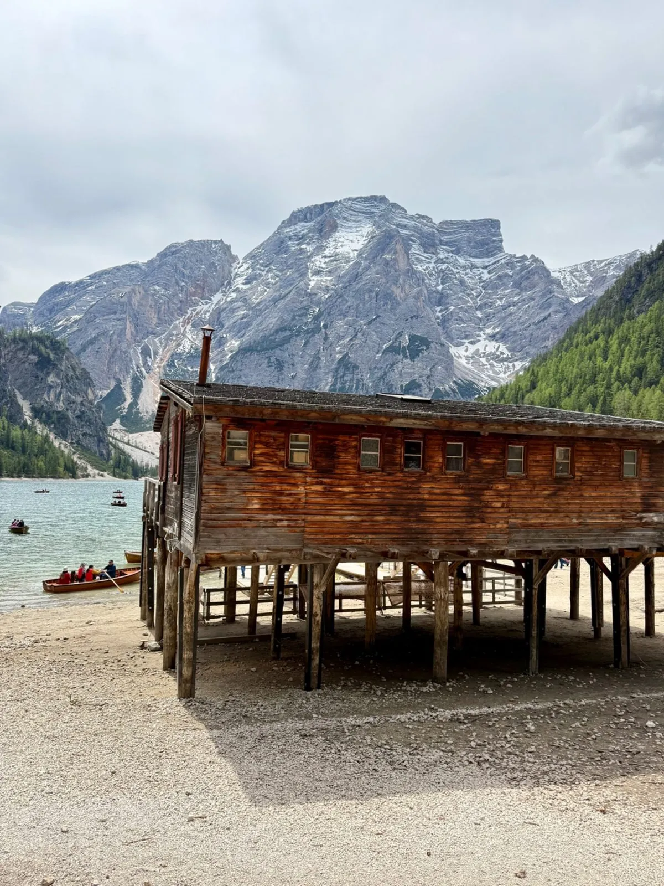
02
LAGO DI BRAIES
Vale a fama, mas planeje no verão
Lago a cerca de 1.490 m de altitude, perto de Dobbiaco, famoso pela água esmeralda e pelos barcos de madeira. Em alemão: Pragser Wildsee.
Reservar: 2 a 3 h Melhor horário: no verão, antes das 9h ou depois das 16h
Dá para alugar um barquinho e remar pelo lago, ou simplesmente dar a volta nele a pé, com uma vista linda o caminho inteiro. Na primavera, chegamos sem reserva nenhuma e tinha umas 100 pessoas por ali. No verão, a história muda completamente.
ATENÇÃO NO VERÃO
OFICIAL
De 1º/07 a 15/09/2026, das 9h às 16h, só entra de carro com reserva. Informações em prags.bz.
03
CINQUE TORRI E NUVOLAU
A vista do Nuvolau roubou a cena
Cinco torres de rocha perto do Passo Falzarego, hoje um museu a céu aberto da Primeira Guerra.
Reservar: dia inteiro Melhor horário: começar cedo
Saímos do Passo Falzarego, que já tem uma vista incrível. A trilha até as Cinque Torri foi tranquila pra gente, mesmo com neve no caminho no fim de abril, e fizemos sem crampons. A vista do Monte Nuvolau nos impressionou ainda mais.
NOSSA TRILHA
VIVIDO
Circuito de 11,3 km pelo Komoot, saindo do Passo Falzarego. Depois das Cinque Torri, uma trilha fácil leva às trincheiras da Primeira Guerra.
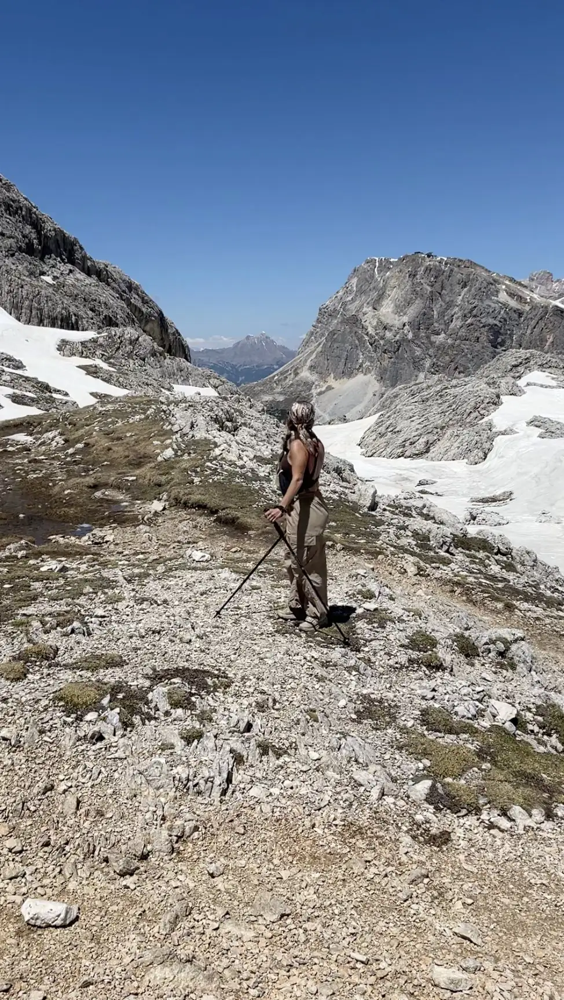
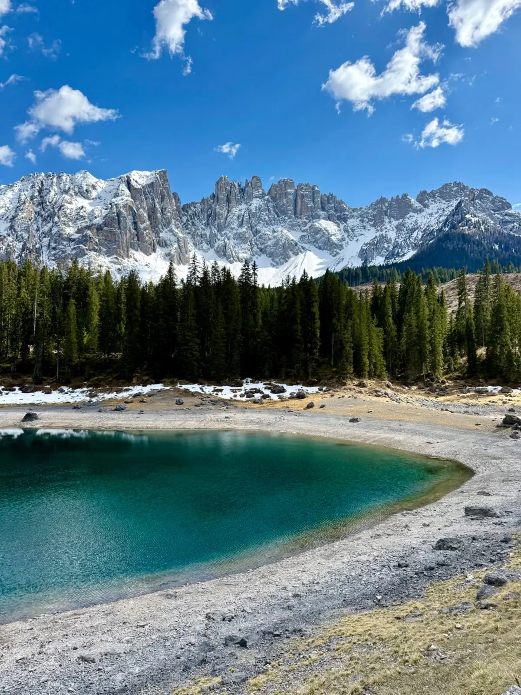
04
LAGO DI CAREZZA
Vale fazer o circuito inteiro
Lago pequeno a cerca de 1.520 m de altitude, aos pés do Latemar, famoso pelas cores da água. Em alemão: Karersee.
Reservar: dia inteiro para o circuito (1 h só no lago) Melhor horário: manhã
Fizemos o circuito que começa pelo lado das montanhas, passa pelo Labirinto de pedras do Latemar e termina no lago. Perto do lago há banheiro público e restaurantes.
NOSSA TRILHA
VIVIDO
15,9 km e +530 m pelo Komoot, saindo do Passo Costalunga. Valeu muito a pena: as paisagens são lindas, mas é puxadinho, não vou negar.
ESTACIONAMENTO NO LAGO
OFICIAL
Quem não quer a trilha toda pode estacionar em frente ao lago (P1). Carro: €13 de 2 a 6 horas. Motorhome: €19 até 3 horas. Confira: eggental.com
05 · 06 · 07
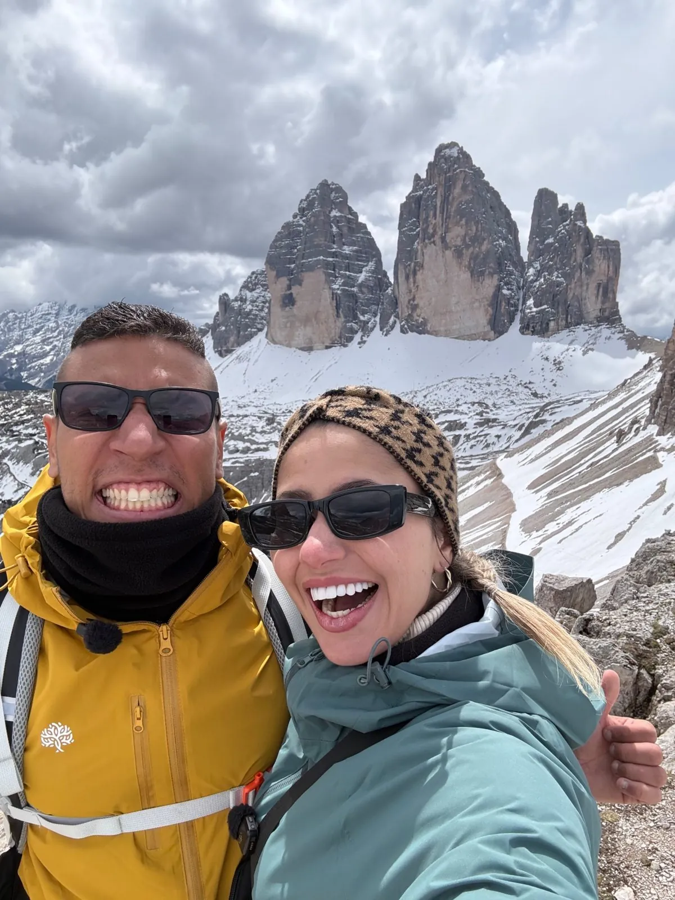
05
TRE CIME DI LAVAREDO
Mais bonita ao vivo do que nas fotos
Três torres de rocha, a mais alta com quase 3.000 m de altitude: o símbolo das Dolomitas. Em alemão: Drei Zinnen.
Reservar: dia inteiro Melhor horário: começar cedo
Foi a trilha que mais nos encantou. Subimos a pé por Val di Landro, sem pegar a estrada do pedágio, e ainda tinha neve em alguns trechos. Queremos voltar para fazer outras trilhas por ali.
NOSSO CAMINHO
VIVIDO
Subida a pé por Val di Landro: sem pedágio e sem reserva. É longa, então saia cedo.
DE CARRO ATÉ O RIFUGIO AURONZO
OFICIAL
Estacionamento só com reserva online: €40 carro e €60 mh (2026). Reserva em pass.auronzo.info.
1 de 3
08
SECEDA
Lindo, mas a gente subiria diferente
Mirante a cerca de 2.500 m de altitude, sobre Ortisei, com a crista inclinada mais fotografada das Dolomitas.
Reservar: dia inteiro Melhor horário: começar cedo
A vista do vale lá de cima é impressionante. A gente só não sabe se subiria de novo pela mesma trilha: economizamos bastante dinheiro, mas chegamos bem cansados.
TELEFÉRICO
OFICIAL
Ortisei–Furnes–Seceda funcionou de 22/05 a 02/11/2026, com bilhete online em seceda.axess.shop. O passe SuperSummer não vale aqui.
COBRANÇA NO CAMINHO
A CONFERIR
Proprietários dos pastos têm cobrado €5 num trecho do caminho até o mirante. Na nossa visita, a cancela estava aberta.
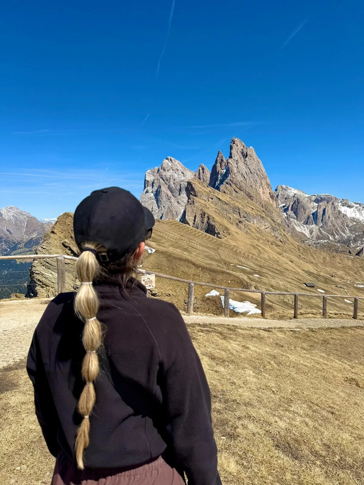
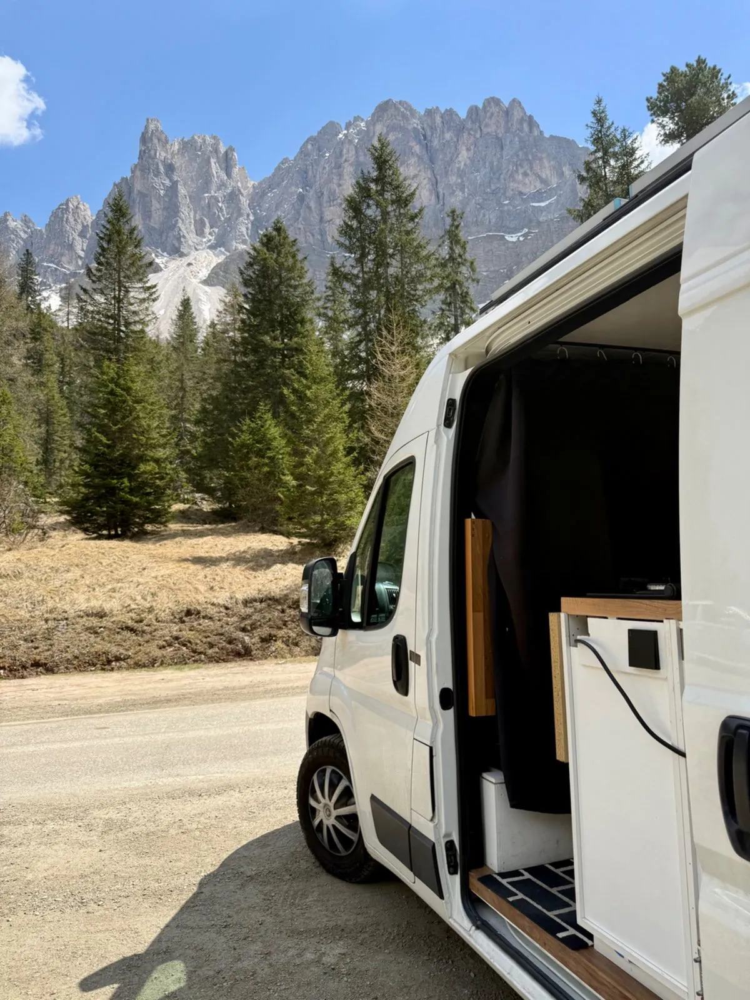
09
ALPE DI SIUSI
No verão, a estrada tem regra
O maior planalto alpino de altitude da Europa, com o Sassolungo ao fundo. Em alemão: Seiser Alm.
Reservar: meio dia Melhor horário: antes das 9h
Passamos pela região, mas não chegamos ao estacionamento que pretendíamos visitar. Para quem vai no verão, vale saber como funciona o acesso.
ACESSO NO VERÃO
OFICIAL
A estrada fecha para carros das 9h às 17h. Desde 29/06/2026, estacionar lá em cima exige reserva online, com entrada até 9h30. Alternativa: teleférico de Siusi, com estacionamento grátis no vale.
10
VAL DI FUNES
Bonito, mas a gente pularia fácil
Vale tranquilo aos pés das Odle, com as igrejinhas mais fotografadas da região. Em alemão: Villnößtal.
Reservar: 1 h Melhor horário: manhã
É aquela foto famosa da igrejinha com as montanhas atrás, sabe? É bonito, mas o estacionamento com acesso perto da igreja custa €10 por dia, e tem pouca coisa para fazer além do mirante. Com tempo curto, seria nossa última prioridade.
NOSSA TROCA
VIVIDO
Vá ao mirante do Sas de Putia, na Strada Provinciale 29, no fim da tarde. Foi o lugar que mais nos surpreendeu.
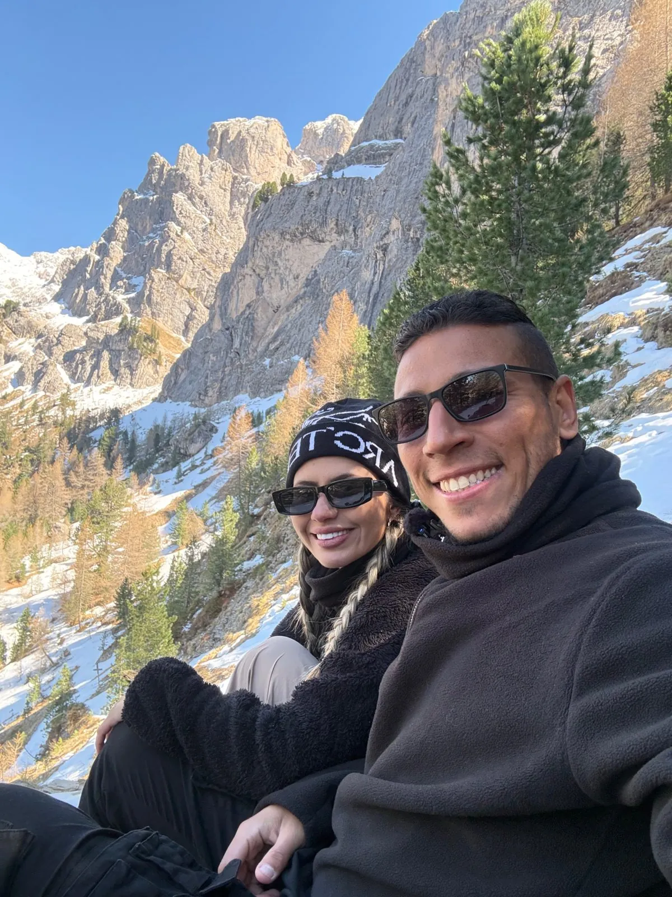
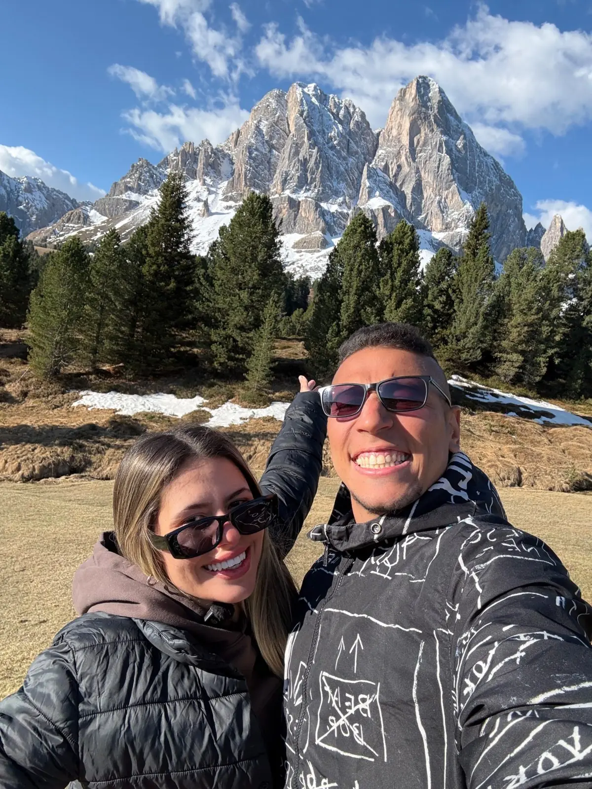
11
SAS DE PUTIA
A surpresa que não estava no roteiro
Montanha isolada de cerca de 2.875 m de altitude, junto ao Passo delle Erbe. Em alemão: Peitlerkofel.
Reservar: pelo menos 1 h Melhor horário: fim de tarde
Estávamos passando pela Strada Provinciale 29 quando vimos a paisagem e paramos no mirante do Sas de Putia, no fim da tarde. Não estava nos nossos planos e virou uma das vistas mais bonitas da viagem. Queremos, com certeza, voltar para fazer trilha no Parque Puez-Odle.
NOSSA DICA
VIVIDO
Se tiver tempo, vá no fim da tarde e aprecie a vista com calma. Você não vai se arrepender. Estacionamento com vista: ver no mapa. Carro: €5 a €8 por dia, cobrado de quem chega entre 7h e 14h. No fim da tarde, é grátis.
12
PIZ BOÈ E PASSO PORDOI
A neve não deixou chegar ao topo
Pico de cerca de 3.150 m de altitude no grupo do Sella, um dos “três mil” mais acessíveis. Em alemão, o passo se chama Pordoijoch.
Reservar: dia inteiro Melhor horário: começar cedo
Subimos pela trilha 627, a partir do Passo Pordoi, mas ainda havia neve e nossos crampons não eram adequados. Desistimos pouco antes do cume. Mesmo assim, a vista de onde paramos já era surreal.
NOSSA TRILHA
VIVIDO
Piz Boè Summit Trail from Passo Pordoi (via Sentiero 627): cerca de 9,55 km pelo Komoot. Na baixa temporada, o estacionamento na estação de esqui estava vazio e sem cobrança.
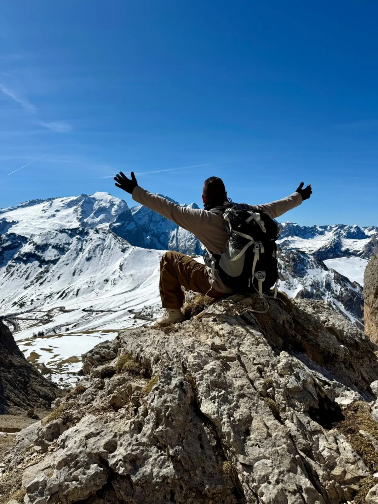
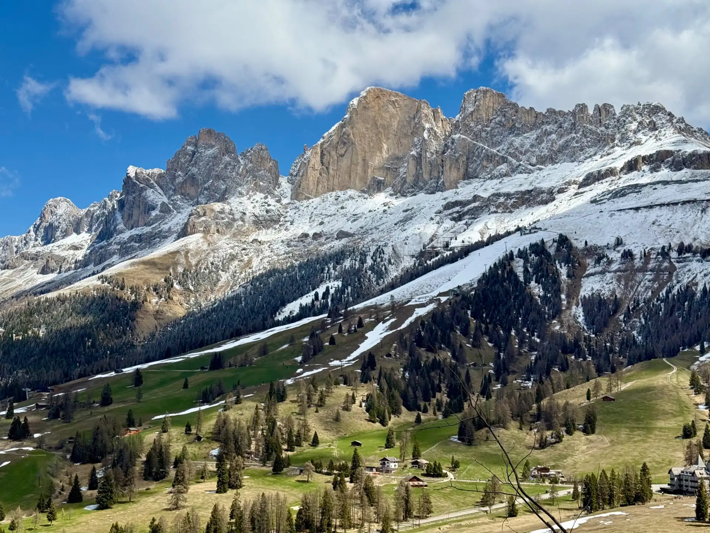
13
QUANDO IR
Montanha vazia ou teleférico aberto?
Fomos na primavera e amamos: trilhas vazias, estacionamento fácil e a sensação de ter a montanha só para a gente. Mas tem o outro lado: neve, frio, dias de chuva e quase tudo fechado. Os teleféricos mais famosos só abriram no fim de maio.
Se voltássemos, iríamos em setembro: o clima costuma ser estável, há menos gente que no verão, os refúgios ainda estão abertos e as trilhas não têm neve derretendo.
BOM SABER
OFICIAL
Em 2026, o teleférico do Seceda e o da Alpe di Siusi funcionaram de 22/05 a 02/11. Quer teleférico? Vá do fim de maio em diante.
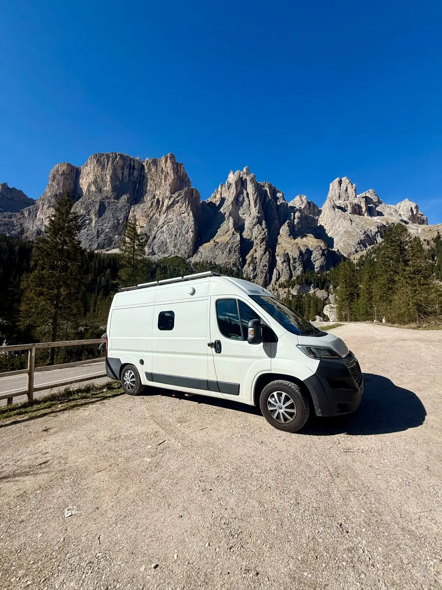
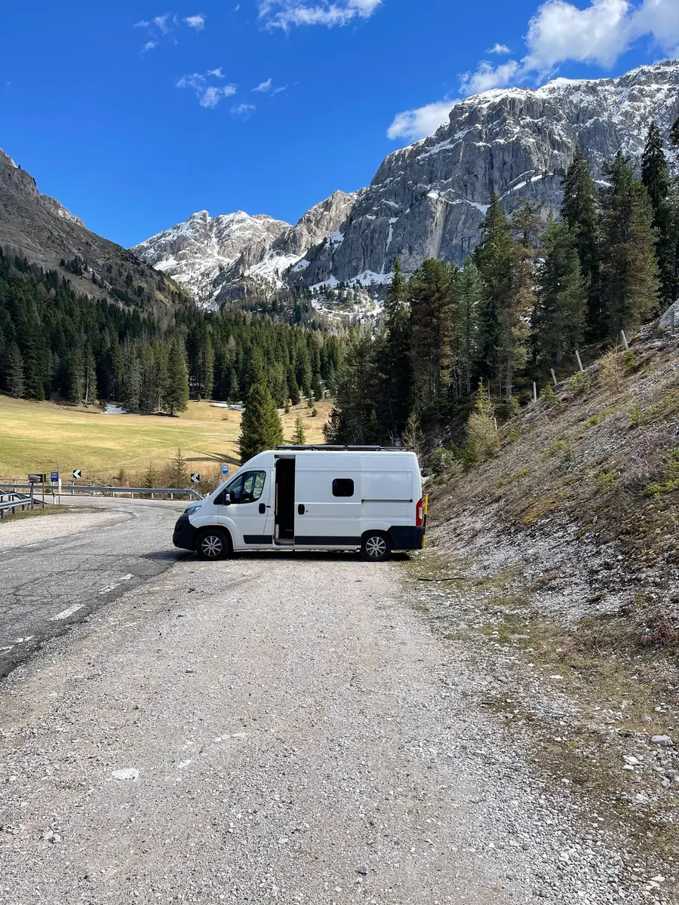
14
ONDE FICAR
Onde ficar
As DOLOMITAS são maiores do que parecem no mapa. Dividir a viagem em duas bases economiza horas de estrada.
Bolzano
MELHOR PARA
Lado oeste e Lago di Carezza
Cidade com mais estrutura e transporte.
Ortisei
MELHOR PARA
Seceda e Val Gardena
Teleféricos saindo da cidade.
Dobbiaco ou Cortina
MELHOR PARA
Braies, Tre Cime e Misurina
Lado leste.
TIPOS DE HOSPEDAGEM
PESQUISA
Dormimos no motorhome a viagem inteira. Para quem prefere hotel: hotéis com spa (muito comuns no Alto Ádige), agriturismo em fazendas, apartamentos para grupos e refúgios para trilheiros. Filtre por estacionamento, meia-pensão e cancelamento flexível.
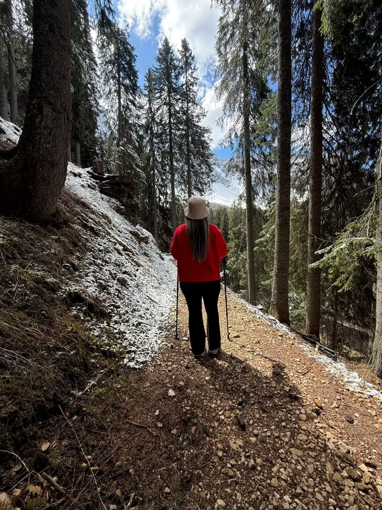
15
COMO CHEGAR
Avião, carro ou motorhome
A gente chegou de motorhome, vindo do norte da Itália por Trento e Bolzano. De avião, a regra é simples: Veneza ou Treviso para o lado leste, Verona para o oeste. Milão só compensa se o voo for bem mais barato. Para conhecer várias regiões, carro ou motorhome faz muita diferença. Dá para usar transporte público escolhendo bem a base, mas os horários limitam bastante.
SEM CARRO ATÉ CORTINA
OFICIAL
Cortina Express e ATVO têm ônibus diários do aeroporto de Veneza e da estação de Mestre até Cortina.
ALUGAR MOTORHOME
A CONFERIR
Roadsurfer e Indie Campers têm retirada em Veneza. Os valores variam entre €50 e €150 por dia.
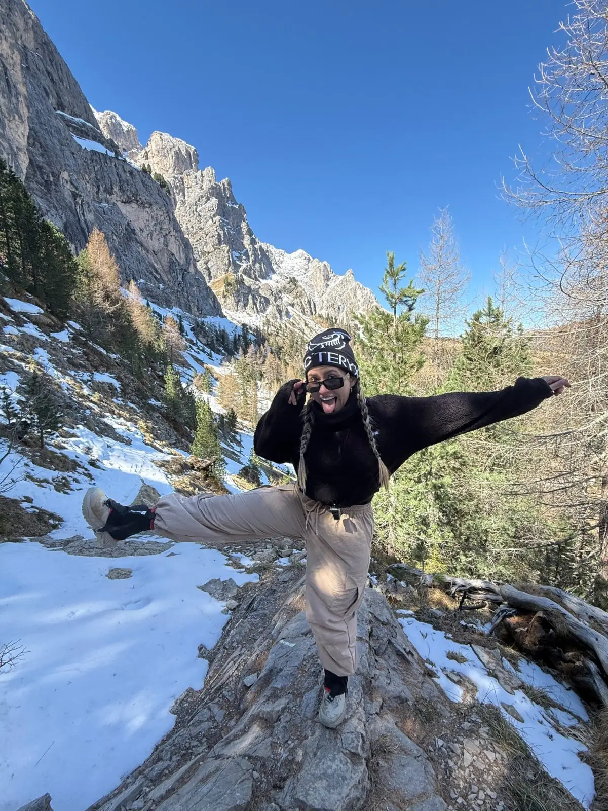
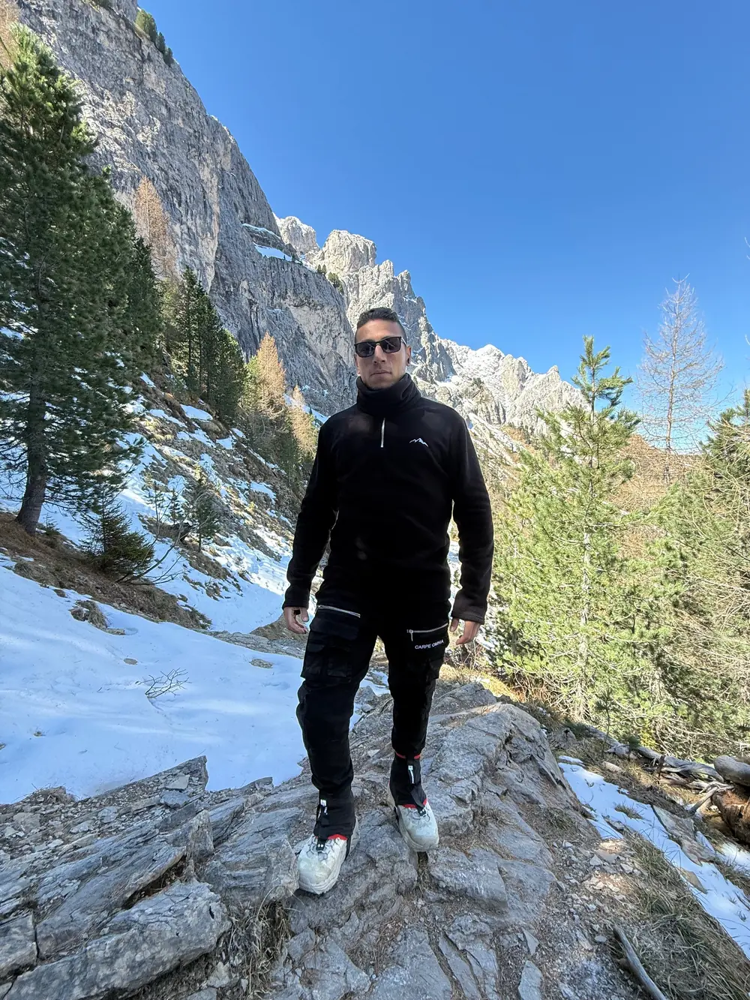
16
O QUE LEVAR
Camadas, não volume
Na montanha o tempo muda rápido. Pegamos sol, chuva, frio de 10 a 12 °C e neve no fim de maio. Vista-se em camadas: uma base que seca rápido, uma camada quente e uma jaqueta impermeável.
NA PRIMAVERA
VIVIDO
Leve crampons ou microspikes adequados para trilha, luva e gorro. Os nossos crampons não deram conta no Piz Boè.
17
O QUE COMER
PESQUISA
Pratos típicos para provar
Na nossa viagem a gente cozinhou no motorhome, então não temos restaurante para indicar. Mas estes são os pratos mais típicos da região, que mistura a cozinha italiana e a tirolesa.
Canederli (Knödel)
Bolinhos de pão com speck, queijo ou espinafre.
Refúgios de montanha
Speck Alto Adige
Presunto defumado típico do Alto Ádige.
Tábuas de frios e mercados
Schlutzkrapfen
Massa recheada de espinafre e ricota.
Val Gardena e Alta Badia
Casunziei
Massa recheada de beterraba, típica de Cortina.
Cortina e arredores
Polenta
Com cogumelos, queijo ou carne.
Refúgios do lado vêneto
Kaiserschmarrn
Panqueca picada e caramelizada, com geleia.
Sobremesa clássica dos refúgios
Strudel de maçã
Massa fina com maçã e canela.
Padarias e cafés
Hugo
Espumante, flor de sabugueiro e hortelã.
Criado no Alto Ádige
Vinhos locais
Lagrein (tinto) e Gewürztraminer (branco).
Restaurantes e enotecas
Onde provar: nos refúgios de montanha (rifugi / Hütten), nas cabanas de pastagem (malghe / Almhütten), no verão, e no Törggelen, a tradição de outono do Alto Ádige.
18
ANTES DE CHEGAR
PESQUISA
Clima mês a mês e o básico da região
DEZ A MAR
Neve, dias curtos e regra de inverno nas estradas. Época de esqui.
ABR E MAI
Neve nas trilhas altas, teleféricos e refúgios fechados, pouca gente (a nossa viagem).
JUN
Neve derretendo no alto, teleféricos começando a abrir.
JUL E AGO
Tudo aberto, dias quentes, trovoadas à tarde e muita gente.
SET
Clima estável, menos gente e refúgios ainda abertos: a nossa época preferida para voltar.
OUT
Cores de outono, temporada de verão encerrando.
NOV
Entre temporadas: muita coisa fechada.
Três línguas: alemão e italiano no Alto Ádige, e ladino em alguns vales. Em Cortina, italiano. Por isso as placas têm nomes duplos.
“Buongiorno” e “Grazie” funcionam em toda parte. No lado tirolês, ouve-se muito “Grüß Gott” (bom dia).
Em vilas pequenas, as lojas fecham no almoço. Aos domingos, muitos mercados fecham: faça as compras antes.
A água da torneira costuma ser potável. Em emergência, ligue 112.
ANTES DE IR
A gente pesquisou por meses. Você não precisa.
Antes desses 30 dias nas DOLOMITAS, passamos meses pesquisando: sites oficiais, fóruns, mapas, preços, regras de estacionamento. E mesmo assim tivemos surpresas. Por isso reunimos TUDO num só lugar: o guia DOLOMITAS sem perrengue.
✓Nossa experiência de motorhome, com os lugares onde estacionamos e dormimos
✓Todas as trilhas que fizemos, com distância, tempo e o que faríamos diferente
✓Quanto gastamos em um mês, de verdade
✓Roteiros e dicas para quem vai de carro, motorhome ou transporte público, em viagens curtas ou longas
✓Sites, preços e regras para o verão e o inverno, reunidos num só lugar
É o guia que a gente queria ter tido antes de ir: feito para você planejar com calma e aproveitar cada dia por lá, sem perrengue.
O NOSSO GUIA
Planeje a viagem inteira com a gente
Um guia completo para qualquer época do ano: contamos tudo o que vivemos e gostaríamos de saber antes de ir, onde ficar, o que combinar no mesmo dia, onde estacionar, o que reservar e tudo o que funcionou para nós.
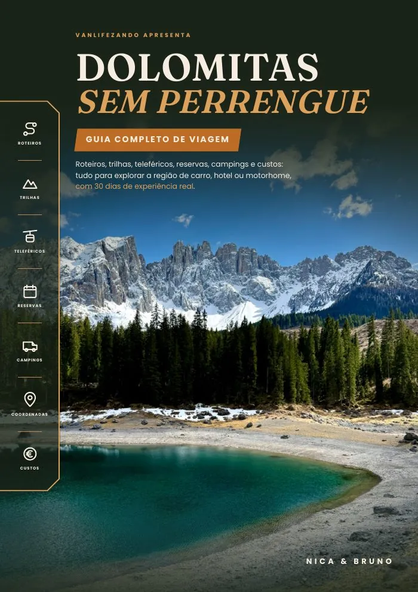
47 páginas · guia completo · todas as estações
DOLOMITAS sem perrengue
O guia que a gente queria ter tido antes de ir: tudo o que vivemos em 30 dias, mais a pesquisa para você planejar em qualquer época.
•Para todas as estações do ano: primavera, verão, outono e inverno
•Roteiros prontos de 4 e 7 dias, com as bases certas para cada um
•Reservas, teleféricos, trilhas e quanto custa de verdade
•Motorhome: regras, apps, campings e 16 coordenadas anotadas por nós
•Fichas das atrações com o que vivemos de verdade: lagos, trilhas e mirantes
•Clima mês a mês, mala para cada época e checklist final antes de viajar
•Links oficiais de reservas e acessos que abrem direto no celular
•Quem vai pela primeira vez às DOLOMITAS e não sabe por onde começar
•Quem viaja de motorhome, van ou carro alugado
•Quem quer economizar horas de pesquisa e aproveitar cada dia por lá
PERGUNTAS FREQUENTES
Em que formato eu recebo?
Em PDF, com sumário clicável. Os links e as coordenadas abrem direto no Google Maps, no celular ou no computador.
Serve para quem não vai de motorhome?
Sim. A gente dormiu no motorhome, mas o guia também traz transporte, tipos de hospedagem e as bases para quem vai de carro ou de hotel.
Serve para qualquer época do ano?
Sim. Fomos na primavera, mas o guia traz o clima mês a mês, o que muda em cada estação e uma página só sobre o inverno, com temporada, passes de esqui e cuidados na estrada.
As informações estão atualizadas?
São referências de 2026, com os links oficiais de reservas e acessos para você conferir antes de ir, porque regras e horários mudam.
Vocês são guias profissionais?
Não. Somos viajantes e contamos o que vivemos, separando sempre o que fizemos do que pesquisamos.
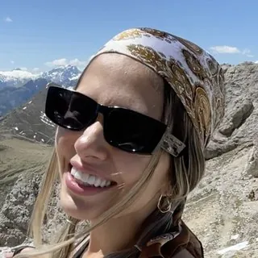
Nica, do Vanlifezando
Viajante, não guia profissional. Escrevo o que vivi na estrada com o Bruno, do jeito que eu contaria para uma amiga. Quer saber como a gente construiu a nossa casa? Conto tudo em como construímos o nosso motorhome.